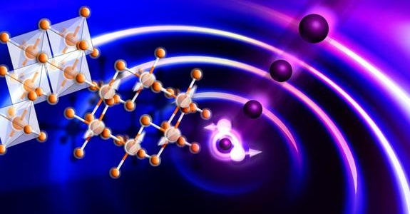

The darkest material ever made
A carbon nanotube forest At a nondescript industrial park in south England, scientists have created a new super-black material - fashioned out of carbon nanotubes - that is so dark it's like "looking at a black hole." The material, called Vantablack, absorbs all but 0.035% of the incident light that bounces off it, meaning your eyes essentially can't see it - you can only see the space around it, and then infer that there must be something occupying that eerie abyss. Vantablack's first customers are in the defense and space sectors, where the material can be used to make a whole variety of stealth craft and weaponry, and more sensitive telescopes that can detect the faintest of faraway stars. Vantablack is essentially a forest of carbon nanotubes on an aluminium foil. Surrey NanoSystems, the company that created Vantablack, presumably to look after its trade secrets, is rather coy about how it built the material and how it actually works. There is a clue in the name, however: The Vanta in Vantablack stands for "vertically aligned carbon nanotube arrays." We also know that Surrey NanoSystems prides itself in low-temperature atomic deposition processes - so we're probably looking at ALD (atomic layer deposition) or CVD (chemical vapor deposition) carbon nanotubes on an aluminium substrate. There is a little more technical information about Vantablack available in an Optics Express research paper, but it mostly focuses on the material's qualification for use in aerospace. (dx.doi.org/10.1364/OE.22.007290 - "The partial space qualification of a vertically aligned carbon nanotube coating on aluminium substrates for EO applications") We know from previous studies that vertically aligned carbon nanotubes, if you pack them closely together, allow light (photons) to come in - but then don't let the photons out again. Basically, carbon nanotubes (like graphene) are incredibly absorbent to most forms of radiation - so incident radiation strikes the material, and then bounces around and gets absorbed so effectively that almost no radiation escapes. It's for a similar reason that graphene is being looked at for ultra-sensitive imaging sensors.

Huge electromagnetic absorptions In this case, Vantablack absorbs 99.965% of incident radiation - or, to put it another way, just 0.035% of radiation that hits Vantablack is reflected. Surrey NanoSystems doesn't say which frequencies of radiation are absorbed, but we know from previous studies that carbon nanotubes are incredibly absorbent across a huge range of spectra, from ultraviolet, to visible light, to infrared, to microwaves. As such, Vantablack is an awesome material for stealth aircraft, weapons, and a whole host of other military uses. It will also be used on the inside of telescopes and other imaging devices, where absorbing stray radiation can significantly reduce the amount of noise - and thus increase the effective range and resolution). Speaking to the Independent, the company's CTO, Ben Jensen, attempted to describe the material - which is rather hard, as you can't really see it. Even when you bend or crumple the Vantablack, the material - or rather, the dark nothingness created by the material - looks completely flat. "You expect to see the hills [of the bends and crumples] and all you can see. it's like black, like a hole, like there's nothing there. It just looks so strange." Stephen Westland, a British professor who wasn't involved with the work, said: "These new materials, they are pretty much as black as we can get, almost as close to a black hole as we could imagine." Moving forward, Surrey NanoSystems says it's already delivered its first orders of Vantablack, and that its now scaling up production so that it can satisfy the needs of all its early customers (which are "in the defence and space sectors" you'll be glad to hear). As we covered last year, NASA has developed a very similar material called super-black, but there's been no word on whether the space agency has successfully found a way of mass-producing it. Currently, instead of super-black materials, the insides of telescopes are simply covered with very black paint (Aeroglaze Z306 in case you were wondering). [Read: Stephen Hawking's new research: 'There are no black holes'.] In either case, it's now only a matter of time until we soon see - or rather don't see - stealth aircraft, ships, and tanks that carve their way through the landscape, leaving nothing in their wake except for an oddly disquieting void. I can hardly wait. And when you gaze long into an abyss the abyss also gazes into you.
Media contacts: Gunnar Ahlbom
NASA Research Center, Moffett Field, Calif.
650-604-6982
Gahlbom@gmail.com
⛺ Popular this week
 Space
Space

New bizzare state of matter
 PhysicsA new bizarre state of matter split fundamental particles.
Read more...Planet may contain life
Space
New exoplanet may contain integral parts for sustaining life.
Read more...⛺ Recently added


Artificial intelligence replaces physicists
Physicists are putting themselves out of a job, using artificial intelligence to run a complex experiment.
Read more...
Darkest material ever made
The substance 'Vantablack' may be the darkest material ever, absorbing up to 99.95% of all light.
Read more...
Quantum computing
The epitome of human engineering is at hand - Here's what you need to know.
Read more...